Succubus DAO succubus nft 系列包含 10000 张独特的图像，这些图像由 650 多种手工设计的变体生成。 Succubus-NFT NFT - 常见问题（FAQ） ▶ 什么是 Succubus-NFT？ Succubus-NFT 是一个 NFT（N
Suga Squad Suga Sean O’Malley 的官方 NFT 收藏。Suga Squad NFT 项目的目标是创建一个真正的个人社区，他们通过数字媒体支持和联系。代币持有者有资格获得商品掉落、产品赠品以及现
Sugar Skullz by Pandaverse Pandaverse 的下一次进化就在这里。Sugar Skullz 出自建立 Phat Pandaz Genesis Collection 和价值 5 亿美元的休闲大麻帝国的同一头脑。我们对 Pandaverse 的 Sugar Skullz 部门感到非常兴奋，因此我们已经着手
Sugoi NFT NYC 2022 该 NFT 使持有者能够通过 LOGIK 回复进入 Sugoi NFT NYC 的资格。在活动期间，为了保证客人的安全，进入场地始终受总访客人数的限制。 Sugoi 是一个为期 3 天的 NFT/web3 艺术和音乐节
SUIKODEN 108 Suikoden Legends 的现代英雄是对歌川国芳 19 世纪多产作品的当代重新想象。我们的项目是重新构想和当代化歌川国芳多产的 19 世纪作品的合作努力。国芳被广泛认为是日本
Suki Waterhouse 由 Suki Waterhouse 在 Sound 上创建。[在https://www.sound.xyz/sukiwaterhouse 对这]首歌发表评论Suki Suki Waterhouse 通过歌曲记录了她
Summer Bulls Summer Bulls 是 8,888 个可爱又火辣的公牛 NFT 的集合，他们正在元界世界各地度假，可在以太坊兼容的多边形网络上获得。25% 铸造：Summer Bulls 空投给三位幸运持有
Summer Smash 2022 Tickets 这些 NFT 不再可兑换为 Summer Smash 腕带。22 年 6 月 16 日 @ 9:00 PM CT 之后的任何二次销售都严格用于收藏品。享受 ：） 2022 Summer Smash 音乐节是由 Lyrical Lemonade 和 SPKRBX 于 2022 年 6 月 17 日至 19 日在
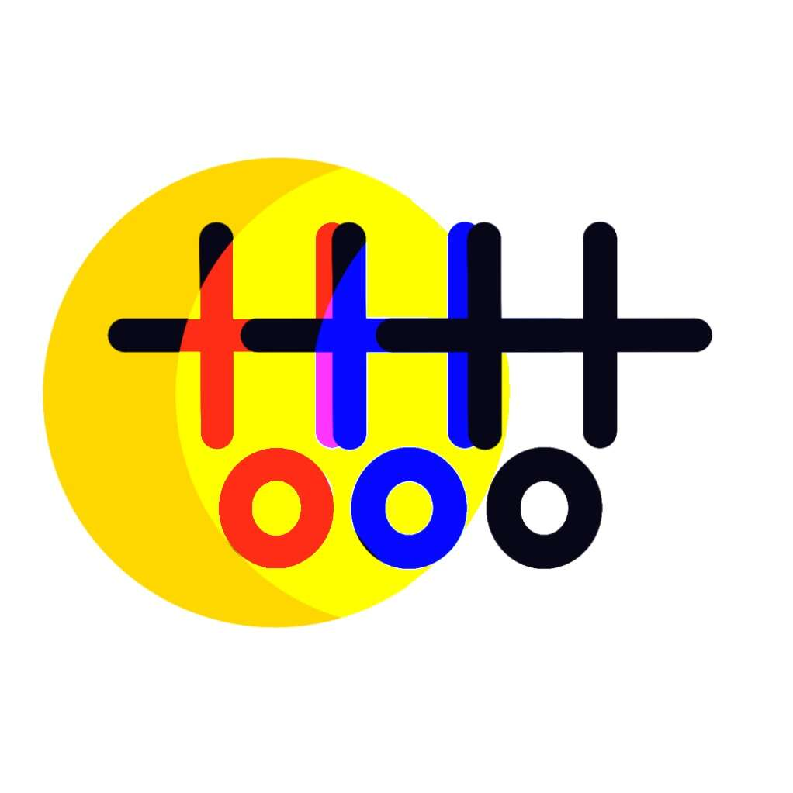 SuperStacked Editions by Sophie Sturdevant 我的名字是索菲，出生于丹佛和芝加哥的艺术家。 在我的艺术生涯中，我开发了一种我称之为 SuperStacked 的风格。 凭借传统背景，我在物理和数字空间工作。 不管媒体如
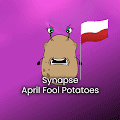 Synapse April Fool Potatoes NFT 技术实验室 虽然 Synapse 已经证明了它的启动板和跨链技术背后的力量，但 The Network 的产品阵列才刚刚开始展示它的多功能性。 我们的工具集范围从 SNP 投资工具到多种生态
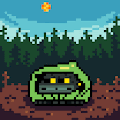 SyncedToadz by CHRISTI 受 CrypToadz 的启发，SyncedToadz 正在突破他们的框架。 他们在您日出时醒来，准备用美味的苍蝇填饱肚子，然后在日落时睡个好觉。 SyncedToadz 是忠诚的，无论您
Syndicated Cat Club 欢迎来到辛迪加猫俱乐部。 此 NFT 的持有者将被邀请质押我们的独家会员卡，这将带来物理和虚拟世界中的许多活动、游戏和互动体验的所有访问权限 Syndicated Cat Club NFT -
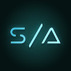 Synthopia Gramatik、Luxas 和 Audioglyphs 开创性的生成音乐合作。 Synthopia 使用网络音频直接在您的浏览器中合成创世轨道“Synthopia Prime”的独特版本
T.A.R.A 获得 T.A.R.A. 的会员资格 Cryptoverse 的数据驱动网关独家阿尔法Jarvis Labs 的下一个度量、工具和服务时代从这里开始。 Tara 是 web3 仪表板，让 TARA NFT 持有者可以访问可靠投资工
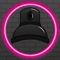 TaggerzXL Taggerz XL 是一个免费的 MINT 创世纪系列，包含 555 个随机生成的踢屁股喷雾罐，用病态的艺术标记以太坊区块链，以实现社会正义。Taggerz XL NFT 充当所有未来收
Tails of the AfterGlow 欢迎来到由 Real Deal Guild 开发的社区驱动的收藏品项目 Tails of Afterglow 的 OpenSea 主页。 RDG 以将基于区块链的游戏介绍给菲律宾玩家并通过游戏赚钱革命为他们提供经济机会而感到自
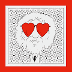 Take Heart Collection Take Heart 是艺术家、教育家、设计师和发明家安德烈·萨拉的 285 幅画作的集合。 在中风并在海外接受心脏手术后，他的医疗索赔被医疗保险拒绝。 为了在他恢复左侧
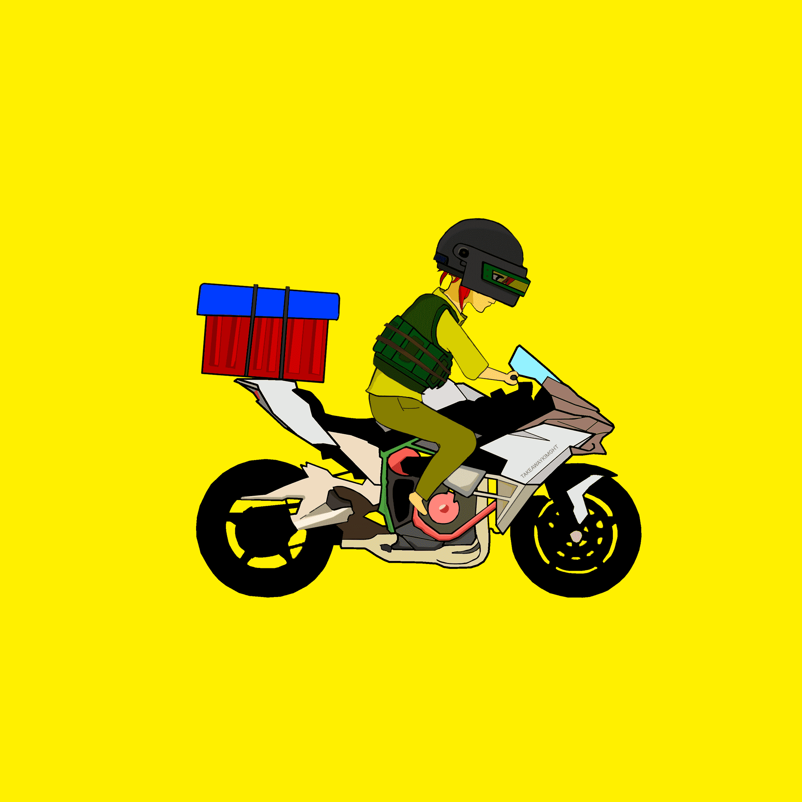 TakeAway Knight NFT web3的尽头是外卖，总共只有8000大外卖骑手，加入光荣进化。外卖骑士 NFTTakeaway Knight 是一个伟大的 web3 协议，由全球数以亿计的 web3 外卖骑手组成。 为了解决 web3 投
Takeshi NFT Takeshi NFT NFT - 常见问题（FAQ） ▶ 什么是 Takeshi NFT？ Takeshi NFT 是一个 NFT（Non-fungible token）集合。 存储在区块链上的数字艺术品集合。 ▶ Takeshi
Tale Of Raynor Thor 是韩国第一个基于 KLAYTN 的具有物品库存概念的 NFT 项目。 以中世纪奇幻故事为基础，我们计划进行各种引入治理系统的内容，共有4个部落、8个职业和来自5个
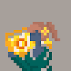 Tales of Akemi Tales of Akemi 是 4000 名手绘女性的集合，她们生活在一个永远不会再出现的瞬息万变的时刻。 Akemi NFT 的故事 - 常见问题（FAQ） ▶ 什么是明美物语？ Tales of Akemi 是一个 NFT
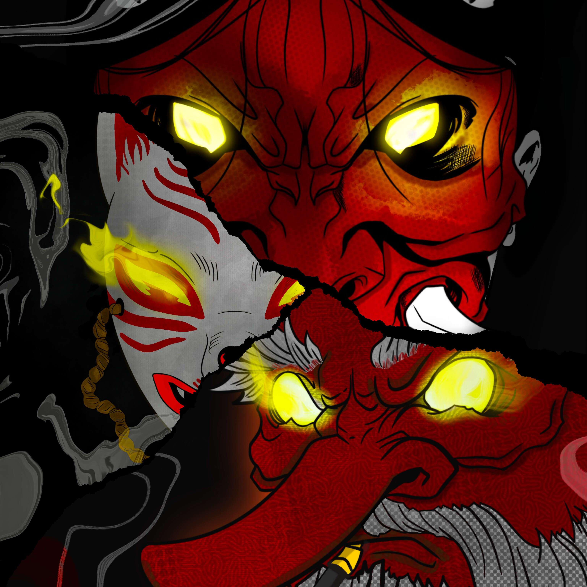 Tales of Otori 1/1 系列的隐谷忍者和武士氏族中的重要人物。 大鸟传说 NFT - 常见问题（FAQ） ▶ 什么是大鸟物语？ Tales of Otori 是一个 NFT（非同质代币）集合。 存储在区块链上
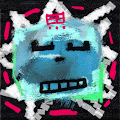 Talisman Supply Talisman Supply 是第一个以护身符为主题的 NFT 系列。 目的是通过独特的艺术品激发持有者的审美欲望。 它是一种没有特殊路线图的装饰性令牌，只是为了能够和你一起欣赏
tama5's art collection (original contract ) 10 件为我们的生活增添色彩的女孩的艺术收藏品。 这个艺术收藏品是由日本插画家“tama5”创作的。 所有的艺术都是独一无二的。 我希望我的插图能让你
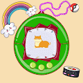 TamaDoge Pets Tamadoge Pets 是 Polygon 区块链上由社区驱动的 4K 随机生成的 NFTS 的有机集合。 我们的目标是在 Metaverse 上建立一个收养的社区。 收养不仅可以让您获得终生的爱，还可以让您获得 Do
Tamago Finance 欢迎来到 Tamago 空间！ 我们很高兴有你在这里。 Tamago Finance 是一种创建合成代币以供现实世界采用的协议，旨在增强可用性和用户体验。 Tamago 是一个神奇的地方，您可以在这
Tamago Neko 当鸡蛋和猫结合在一起时，您将制作 Tamago Neko！700 只猫； 300 免费 2 每笔交易，400 每笔 0.004，每个钱包最多 15 Tamago Neko NFT - 常见问题（FAQ） ▶ 什
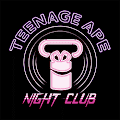 TANC - Teenage Ape Night Club 参加以太坊区块链的少年猿！！ TANC - 少年猿夜总会 NFT - 常见问题（FAQ） ▶ 什么是 TANC - Teenage Ape Night Club？ TANC - Teenage Ape Night Club 是一个 NFT（非同质代币）系列。 存
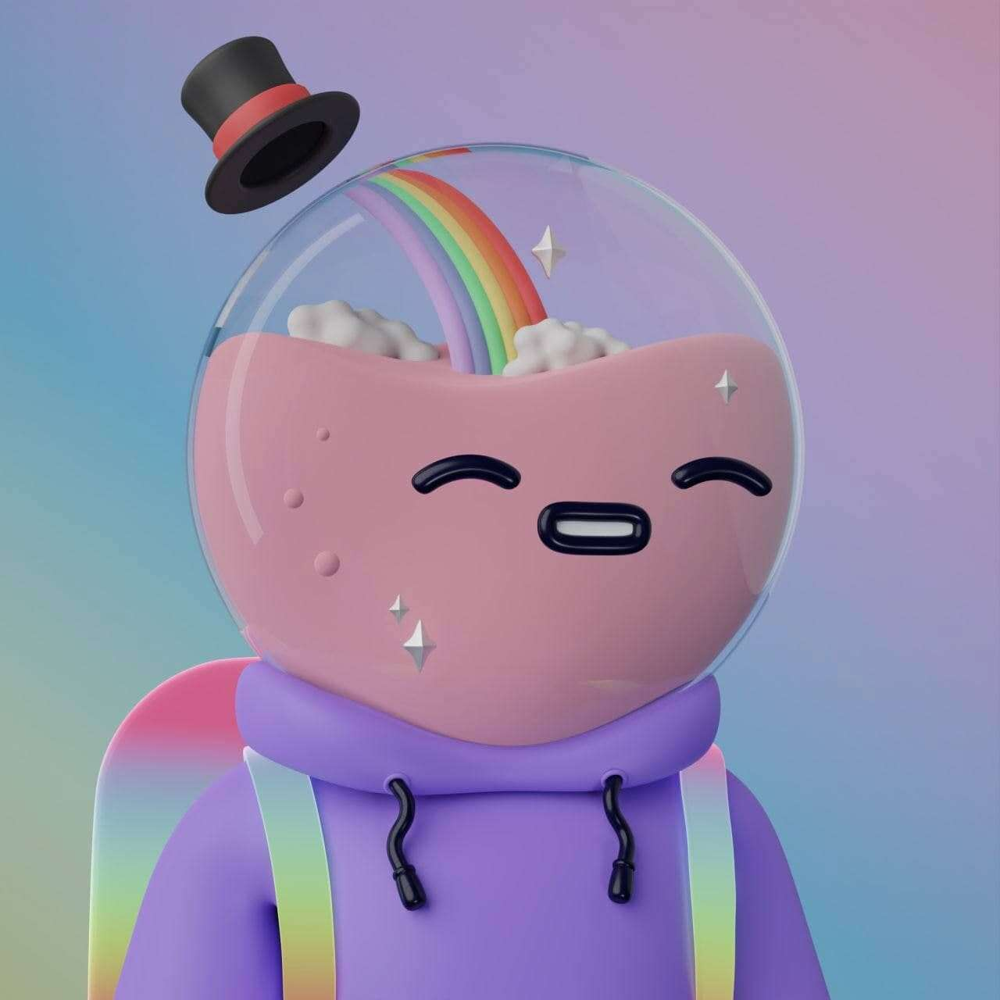 TANKIES EVOLVE Tankies 已经进化，现在是 3D 了！ TANKIES EVOLVE NFT - 常见问题（FAQ） ▶ 什么是坦克进化？ TANKIES EVOLVE 是一个 NFT（非同质代币）集合。 存储在区块链上的数字艺术品集合。 ▶ TANKIES
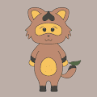 TANU-KIDS 变身学徒浣熊“TANU-KIDS” 一只温柔的浣熊，可以变身为每个人都想成为的样子。 ︎你想成为什么？ TANU-KIDS NFT - 常见问题（FAQ） ▶ 什么是 TANU-
Tanuki Frens Tanuki Frens 是以太坊区块链上由社区驱动的 NFT 集合。 我们的收藏包括 5,555 只可爱的狸猫，它们正在寻找最好的朋友来进行狸猫冒险。 Tanuki Frens NFT - 常见问题（FAQ） ▶ 什么
TAPZ GALLANTINO 在朋克 R&B、视觉传达和高级时装世界之间架起一座桥梁。NFT stats 为您提供有关 NFT 空间的最新信息。 如果您想找到最好的 NFT 购买、即将推出的 NFT 项
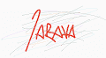 Tarava NFTs - The Genesis 来自 Pandora 遥远土地的 50 个 Genesis NFT 集合。 Genesis NFT 的持有者将从 The Tarava Collection 中获得特殊津贴和版税优势 Tarava NFT - The Genesis NFT - 常见问题 (FAQ) ▶ 什么是 Tarava NFT - The Genesis？ Tarava NFTs - The
Text by Logo 链上 SVG 文本。与 Deglomerate 徽标集成。Logo NFT 的文本 - 常见问题（FAQ） ▶ 什么是名字？ Text by Logo 是 NFT（替代代币）集合。在区块链上存储一个不可收藏的收藏
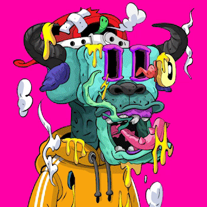 THAI GHOSTs FARMING (TGF) THAI GHOSTs FARMING 是 NFTs 实用项目的集合。 这些项目完成了 5,000 个 NFT 项目用于铸币。 供应 5,000 件物品。 为赠品、奖励和空投保留 100 件物品。 预售 1,000 件商品，每铸币 0.002 ETH，最多
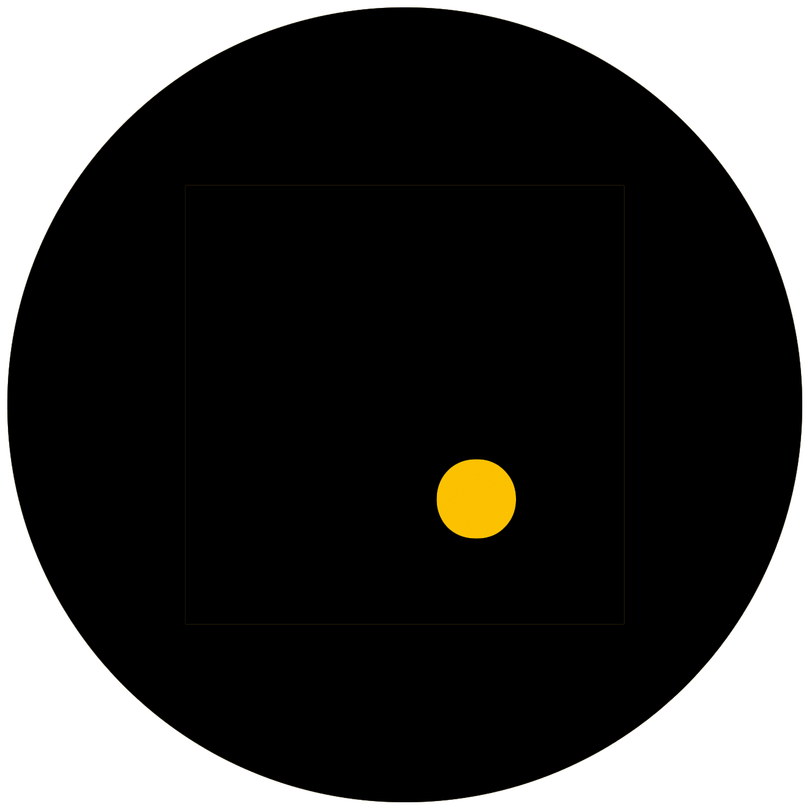 that poster collection old 我们对 movienftz 的抱负是创建一个行业标准的 NFT 分销渠道，通过实用程序提供有意义的所有权以及有价值的电影之外的体验。movienftz 是一家网络 3.0 公司，
Thats a Awful Lot of WCC 时代正式来临！ 2022 年 3 月 27 日，CarCoin 服务器将集成到 WCC MetaWhips Discord 服务器中。此服务器将于 2022 年 4 月 3 日关闭。 你为什么要合并？ CarCoin 项目最初是由一群不再
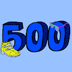 The 500 PROJECT 欢迎来到我们独特的收藏。 500 的 500 版。 10 月 15 日启动。500 项目官方 @500项目页面 · 2021年10月2日 🚨 我们赠送 3X 500s🚨 如何参与？ 1.关注
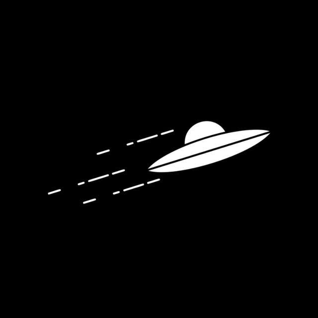 the abducting collective: v3 现实生活中的持有者津贴 + 社区驱动的项目 + 有机💧 | doxxed 🥽 | 没有矛盾，没有废话🐄当前集体：v2 NFT - 常见问题（FAQ） ▶ 什么是出席集体：v2？ 全集：
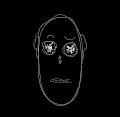 the abstract dudes 抽象的帅哥是帅哥的派生词。它使用原始的花花公子合同 DNA 来创造一种互动的衍生艺术。这是一个概念证明，展示了原始花花公子 DNA 可以做什么。 这些作品被赠
The Adventurers Weapon 冒险者不是另一个没有长期实用性的基于文本的一次性 Lootproject 克隆。我们了解文本 RPG 主题 NFT 背后的乐趣和吸引力，但我们也了解 NFT 空间非常注重艺术。因此，我们受
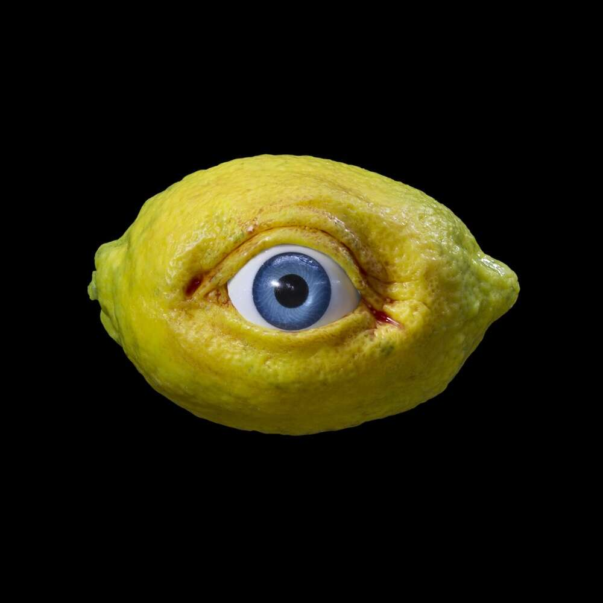 The All Seeing Lemon 放柠檬吧。ALL SEEING LEMON 是由 The Fruit Factory 创建的全知柑橘实体的 NFT 集合，The Fruit Factory 是一家生产各种魔法生物的 web3 娱乐公司。我们的 LEMON 是生成艺术 PFP，融合了定格